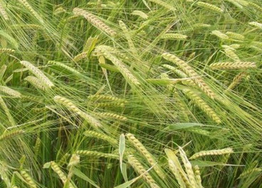

Beremeal from Orkney
Beremeal has been described as having an earthy, slightly astringent, nutty flavour. It is traditionally used to make a dark-greyish bannock, a soft roll that is a speciality of Orkney, Shetland and the Western Isles. A scientific nutritional analysis of Beremeal shows a wide variety of macro- and micro-nutrients, including significant quantities of folate, thiamine, pantothenic acid, iron, iodine and magnesium. Like other types of barley, Bere also aids in improving kidney function
More Information
Bere was grown historically in Wales (as Haidd Garw or Coarse barley) and Scotland on higher lands of poor fertility (Highlands and Islands). The short growing season of Bere suits the lands of low fertility and long summer daylight hours. The long history of Bere cultivation within Scotland has led to a wide genetic diversity between Bere populations. Beremeal was widely used throughout Scotland where barley bannocks were eaten as the main bread. Hand mills or querns produced Beremeal for household purposes while watermills produced meal on a larger scale.
Order Online